library(tidyverse)
#> ── Attaching core tidyverse packages ───────────────────── tidyverse 2.0.0 ──
#> ✔ dplyr 1.1.3 ✔ readr 2.1.4
#> ✔ forcats 1.0.0 ✔ stringr 1.5.0
#> ✔ ggplot2 3.4.3 ✔ tibble 3.2.1
#> ✔ lubridate 1.9.3 ✔ tidyr 1.3.0
#> ✔ purrr 1.0.2
#> ── Conflicts ─────────────────────────────────────── tidyverse_conflicts() ──
#> ✖ dplyr::filter() masks stats::filter()
#> ✖ dplyr::lag() masks stats::lag()
#> ℹ Use the conflicted package (<http://conflicted.r-lib.org/>) to force all conflicts to become errors2 Visualização de dados
2.1 Introdução
“O gráfico simples trouxe mais informações à mente dos analistas de dados do que qualquer outro dispositivo.” — John Tukey
O R possui diversos sistemas para construir gráficos, mas o ggplot2 é um dos mais elegantes e versáteis. O ggplot2 implementa a gramática dos gráficos, um sistema coerente para descrever e construir gráficos. Com o ggplot2 você pode fazer mais, e mais rápido, ao aprender um sistema e aplicá-lo em muitos lugares.
Este capítulo irá te ensinar como visualizar seus dados usando o ggplot2. Nós vamos começar criando um gráfico de dispersão simples e usá-lo para introduzir o mapeamento de atributos estéticos (aesthetic) e geometrias – os blocos fundamentais na construção do ggplot2. Nós vamos então te orientar na visualização de distribuições de variáveis individuais, bem como na visualização de relações entre duas ou mais variáveis. Terminaremos salvando seus gráficos e com dicas de resolução de problemas.
2.1.1 Pré-requisitos
Este capítulo tem foco no ggplot2, um dos principais pacotes do tidyverse. Para acessar os bancos de dados, páginas de ajuda e funções utilizadas neste capítulo, você deve carregar o tidyverse executando o comando:
Essa única linha de código carrega os pacotes essenciais do tidyverse, que você irá utilizar em quase toda análise de dados. Ela também te diz quais funções do tidyverse possuem conflitos com as função do R base (ou de outro pacote que você tenha carregado)1.
Se você rodar este código e receber a mensagem de erro there is no package called 'tidyverse', você precisará instalar o pacote antes usando a função install.packages() ou a interface de instalação do RStudio, e então rodar library() novamente.
install.packages("tidyverse")
library(tidyverse)Você só precisa instalar um pacote uma vez, mas precisa carregá-lo sempre que iniciar uma nova sessão.
Além do tidyverse, nós também usaremos o pacote dados, que inclui várias bases de dados, incluindo um com medidas corporais de pinguins de três ilhas do Arquipélago Palmer, junto do pacote ggthemes, que fornece uma paleta de cores segura para pessoas com daltonismo.
2.2 Primeiros passos
Os pinguins com nadadeiras mais compridas pesam mais ou menos que pinguins com nadadeiras curtas? Você provavelmente já tem uma resposta, mas tente torná-la mais precisa. Como é a relação entre o comprimento da nadadeira e massa corporal? Ela é positiva? Negativa? Linear? Não linear? A relação varia com a espécie do pinguim? E quanto à ilha onde o pinguim vive? Vamos criar visualizações que podemos usar para responder essas perguntas.
2.2.1 O data frame pinguins
Você pode testar suas respostas à essas questões usando o data frame pinguins encontrado no pacote dados (usando dados::pinguins). Um data frame é uma coleção tabular (formato de tabela) de variáveis (nas colunas) e observações (nas linhas). pinguins contém 344 observações coletadas e disponibilizadas pela Dra. Kristen Gorman e pelo PELD Estação Palmer, Antártica2.
Para facilitar a discussão, vamos definir alguns termos:
Uma variável é uma quantidade, qualidade ou propriedade que você pode medir.
Um valor é o estado de uma variável quando você a mede. O valor de uma variável pode mudar de medição para medição.
Uma observação é um conjunto de medições feitas em condições semelhantes (geralmente todas as medições em uma observação são feitas ao mesmo tempo e no mesmo objeto). Uma observação conterá vários valores, cada um associado a uma variável diferente. Às vezes, vamos nos referir a uma observação como um ponto de dados.
Dados tabulares são um conjunto de valores, cada um associado a uma variável e uma observação. Os dados tabulares estarão no formato tidy (arrumado) se cada valor estiver em sua própria “célula”, cada variável em sua própria coluna e cada observação em sua própria linha.
Neste contexto, uma variável refere-se a um atributo de todos os pinguins, e uma observação refere-se a todos os atributos de um único pinguim.
Digite o nome do data frame no console e o R mostrará uma visualização de seu conteúdo. Observe que aparece escrito tibble no topo desta visualização. No tidyverse, usamos data frames especiais chamados tibbles, dos quais você aprenderá mais em breve.
pinguins
#> # A tibble: 344 × 8
#> especie ilha comprimento_bico profundidade_bico
#> <fct> <fct> <dbl> <dbl>
#> 1 Pinguim-de-adélia Torgersen 39.1 18.7
#> 2 Pinguim-de-adélia Torgersen 39.5 17.4
#> 3 Pinguim-de-adélia Torgersen 40.3 18
#> 4 Pinguim-de-adélia Torgersen NA NA
#> 5 Pinguim-de-adélia Torgersen 36.7 19.3
#> 6 Pinguim-de-adélia Torgersen 39.3 20.6
#> # ℹ 338 more rows
#> # ℹ 4 more variables: comprimento_nadadeira <int>, massa_corporal <int>, …Este data frame contém 8 colunas. Para uma visualização alternativa, onde você pode ver todas as variáveis e as primeiras observações de cada variável, use glimpse(). Ou, se você estiver no RStudio, execute View(pinguins) para abrir um visualizador de dados interativo.
glimpse(pinguins)
#> Rows: 344
#> Columns: 8
#> $ especie <fct> Pinguim-de-adélia, Pinguim-de-adélia, Pinguim…
#> $ ilha <fct> Torgersen, Torgersen, Torgersen, Torgersen, T…
#> $ comprimento_bico <dbl> 39.1, 39.5, 40.3, NA, 36.7, 39.3, 38.9, 39.2,…
#> $ profundidade_bico <dbl> 18.7, 17.4, 18.0, NA, 19.3, 20.6, 17.8, 19.6,…
#> $ comprimento_nadadeira <int> 181, 186, 195, NA, 193, 190, 181, 195, 193, 1…
#> $ massa_corporal <int> 3750, 3800, 3250, NA, 3450, 3650, 3625, 4675,…
#> $ sexo <fct> macho, fêmea, fêmea, NA, fêmea, macho, fêmea,…
#> $ ano <int> 2007, 2007, 2007, 2007, 2007, 2007, 2007, 200…Entre as variáveis em pinguins estão:
especie: a espécie de um pinguim (Pinguim-de-adélia, Pinguim-de-barbicha e Pinguim-gentoo).comprimento_nadadeira: comprimento da nadadeira de um pinguim, em milímetros.massa_corporal: massa corporal de um pinguim, em gramas.
Para saber mais sobre pinguins, abra sua página de ajuda executando ?pinguins.
2.2.2 Objetivo final
Nosso objetivo final neste capítulo é recriar a seguinte visualização que exibe a relação entre o comprimento da nadadeira e a massa corporal desses pinguins, levando em consideração a espécie do pinguim.
![Um gráfico de dispersão da massa corporal vs. comprimento da nadadeira dos pinguins, com uma linha de melhor ajuste da relação entre essas duas variáveis sobreposta. O gráfico mostra uma relação positiva, razoavelmente linear e relativamente forte entre essas duas variáveis. As espécies (Pinguim-de-adélia, Pinguim-de-barbicha e Pinguim-gentoo) são representadas com cores e formas diferentes. A relação entre a massa corporal e o comprimento da nadadeira é aproximadamente a mesma para essas três espécies, e os pinguins Gentoo são maiores do que os pinguins das outras duas espécies.](data-visualize_files/figure-html/unnamed-chunk-7-1.png)
2.2.3 Criando um gráfico ggplot
Vamos recriar esse gráfico passo a passo.
No ggplot2, você inicia um gráfico com a função ggplot(), definindo um objeto de gráfico ao qual você adiciona camadas. O primeiro argumento da função ggplot() é o conjunto de dados a ser usado no gráfico e, portanto, ggplot(data = pinguins) cria um gráfico vazio que está preparado para exibir os dados dos pinguins, mas, como ainda não dissemos como fazer a visualização, por enquanto ele está vazio. Esse não é um gráfico muito interessante, mas você pode pensar nele como uma tela vazia na qual você pintará as camadas restantes do seu gráfico.
ggplot(data = pinguins)
Em seguida, precisamos informar ao ggplot() como as informações dos nossos dados serão representadas visualmente. O argumento mapping (mapeamento) da função ggplot() define como as variáveis em seu conjunto de dados são mapeadas para as propriedades visuais (estética) do gráfico. O argumento mapping é sempre definido na função aes(), e os argumentos x e y de aes() especificam quais variáveis devem ser mapeadas nos eixos x e y. Por enquanto, mapearemos apenas o comprimento da nadadeira para o atributo estético x e a massa corporal para o atributo y. O ggplot2 procura as variáveis mapeadas no argumento data, nesse caso, pinguins.
O gráfico a seguir mostra o resultado da adição desses mapeamentos.
Nossa tela vazia agora está mais estruturada: está claro onde os comprimentos das nadadeiras serão exibidos (no eixo x) e onde as massas corporais serão exibidas (no eixo y). Mas os pinguins em si ainda não estão no gráfico. Isso ocorre porque ainda não definimos, em nosso código, como representar as observações de nosso data frame em nosso gráfico.
Para isso, precisamos definir um geom: A geometria que um gráfico usa para representar os dados. Essas geometrias são disponibilizados no ggplot2 com funções que começam com geom_. As pessoas geralmente descrevem os gráficos pelo tipo de geom que o gráfico usa. Por exemplo, os gráficos de barras usam geometrias de barras (geom_bar()), os gráficos de linhas usam geometrias de linhas (geom_line()), os boxplots usam geometrias de boxplot (geom_boxplot()), os gráficos de dispersão usam geometrias de pontos (geom_point()) e assim por diante.
A função geom_point() adiciona uma camada de pontos ao seu gráfico, o que cria um gráfico de dispersão. O ggplot2 vem com muitas funções de geometria, cada uma adicionando um tipo diferente de camada a um gráfico. Você aprenderá várias geometrias ao longo do livro, principalmente em ?sec-layers.
ggplot(
data = pinguins,
mapping = aes(x = comprimento_nadadeira, y = massa_corporal)
) +
geom_point()
#> Warning: Removed 2 rows containing missing values (`geom_point()`).
Agora temos algo que se parece com o que poderíamos chamar de “gráfico de dispersão”. Ele ainda não corresponde ao nosso gráfico mostrado no início da seção “objetivo final”, mas, usando esse gráfico, podemos começar a responder à pergunta que motivou nossa exploração: “Como é a relação entre o comprimento da nadadeira e a massa corporal?” A relação parece ser positiva (à medida que o comprimento da nadadeira aumenta, a massa corporal também aumenta), razoavelmente linear (os pontos estão agrupados em torno de uma linha em vez de uma curva) e moderadamente forte (não há muita dispersão em torno dessa linha). Os pinguins com nadadeiras mais longas geralmente são maiores em termos de massa corporal.
Antes de adicionarmos mais camadas a esse gráfico, vamos parar por um momento e revisar a mensagem de aviso que recebemos:
Removed 2 rows containing missing values (
geom_point()).
Estamos vendo essa mensagem porque há dois pinguins em nosso conjunto de dados com valores faltantes (missing values - NA*) de massa corporal e/ou comprimento da nadadeira e o ggplot2 não tem como representá-los no gráfico sem esses dois valores. Assim como o R, o ggplot2 adota a filosofia de que os valores faltantes nunca devem desaparecer silenciosamente. Esse tipo de aviso é provavelmente um dos tipos mais comuns de avisos que você verá ao trabalhar com dados reais - os valores faltantes são um problema muito comum e você aprenderá mais sobre eles ao longo do livro, especialmente em ?sec-missing-values. Nos demais gráficos deste capítulo, vamos suprimir esse aviso para que ele não seja mostrado em cada gráfico que fizermos.
2.2.4 Adicionando atributos estéticos e camadas
Gráficos de dispersão são úteis para exibir a relação entre duas variáveis numéricas, mas é sempre uma boa ideia ter uma postura cética em relação a qualquer relação aparente entre duas variáveis e perguntar se pode haver outras variáveis que expliquem ou mudem a natureza dessa relação aparente. Por exemplo, a relação entre o comprimento das nadadeira e a massa corporal difere de acordo com a espécie? Vamos incluir as espécies em nosso gráfico e ver se isso revela alguma ideia adicional sobre a relação aparente entre essas variáveis. Faremos isso representando as espécies com pontos de cores diferentes.
Para conseguir isso, precisaremos modificar o atributo estético ou a geometria? Se você pensou “no mapeamento estético, dentro de aes()”, você já está pegando o jeito de criar visualizações de dados com o ggplot2! Caso contrário, não se preocupe. Ao longo do livro, você criará muito mais visualizações com ggplot e terá muito mais oportunidades de verificar sua intuição.
ggplot(
data = pinguins,
mapping = aes(x = comprimento_nadadeira, y = massa_corporal, color = especie)
) +
geom_point()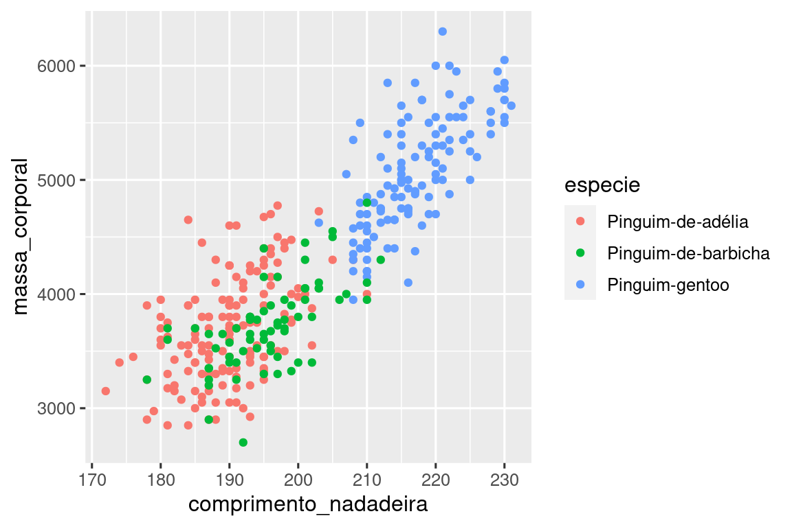
Quando uma variável categórica é mapeada a um atributo estético, o ggplot2 atribui automaticamente um valor único da estética (aqui uma cor única) a cada nível único da variável (cada uma das três espécies), um processo conhecido como dimensionamento. O ggplot2 também adicionará uma legenda que explica quais valores correspondem a quais níveis.
Agora vamos adicionar mais uma camada: uma curva suave que exibe a relação entre a massa corporal e o comprimento das nadadeiras. Antes de prosseguir, consulte o código acima e pense em como podemos adicionar isso ao nosso gráfico existente.
Como essa é uma nova geometria que representa nossos dados, adicionaremos uma nova geometria como uma camada sobre o nossa geometria de pontos: geom_smooth(). E especificaremos que queremos desenhar a linha de melhor ajuste com base em um modelo linear (linear model em inglês) com method = "lm".
ggplot(
data = pinguins,
mapping = aes(x = comprimento_nadadeira, y = massa_corporal, color = especie)
) +
geom_point() +
geom_smooth(method = "lm")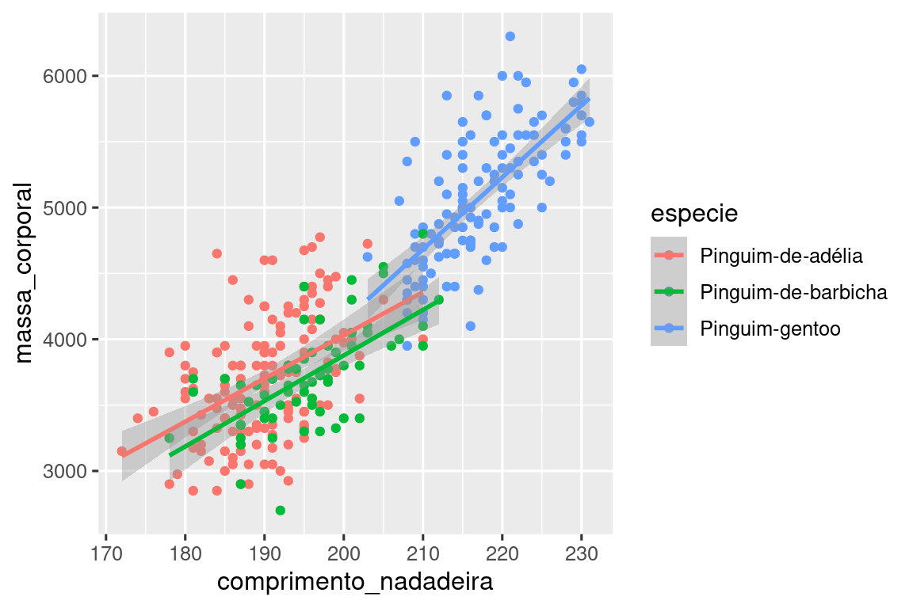
Adicionamos linhas com sucesso, mas esse gráfico não se parece com o gráfico do Seção 2.2.2, que tem apenas uma linha para todo o conjunto de dados, em vez de linhas separadas para cada espécie de pinguim.
Quando os mapeamentos estéticos são definidos em ggplot(), no nível global, eles são passados para cada uma das camadas de geometria (geom) subsequentes do gráfico. Entretanto, cada função geom no ggplot2 também pode receber um argumento mapping, que permite mapeamentos estéticos em nível local que são adicionados àqueles herdados do nível global. Como queremos que os pontos sejam coloridos com base na espécie, mas não queremos que as linhas sejam separadas para eles, devemos especificar color = especie somente para geom_point().
ggplot(
data = pinguins,
mapping = aes(x = comprimento_nadadeira, y = massa_corporal)
) +
geom_point(mapping = aes(color = especie)) +
geom_smooth(method = "lm")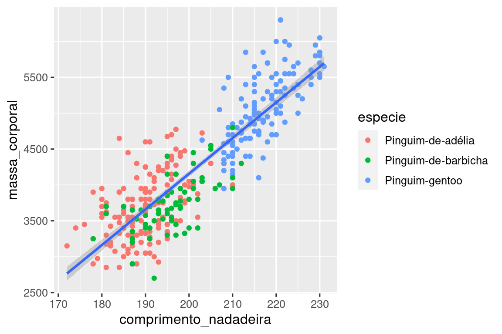
Pronto! Temos algo que se parece muito com nosso objetivo final, embora ainda não esteja perfeito. Ainda precisamos usar formas diferentes para cada espécie de pinguim e melhorar os rótulos.
Geralmente, não é uma boa ideia representar informações usando apenas cores em um gráfico, pois as pessoas percebem as cores de forma diferente devido ao daltonismo ou a outras diferenças de visão de cores. Portanto, além da cor, também podemos mapear especie para a estética shape (forma).
ggplot(
data = pinguins,
mapping = aes(x = comprimento_nadadeira, y = massa_corporal)
) +
geom_point(mapping = aes(color = especie, shape = especie)) +
geom_smooth(method = "lm")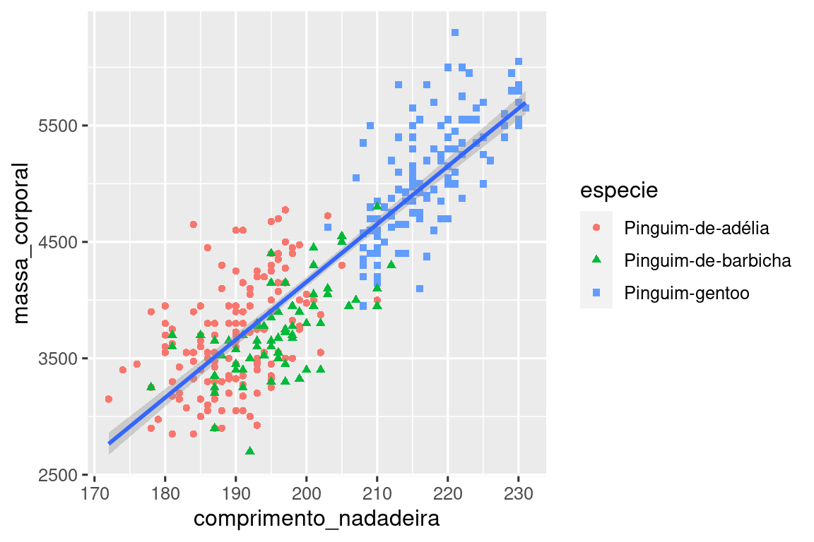
Observe que a legenda também é atualizada automaticamente para refletir as diferentes formas dos pontos.
E, finalmente, podemos melhorar os rótulos do nosso gráfico usando a função labs() em uma nova camada. Alguns dos argumentos de labs() podem ser autoexplicativos: title adiciona um título e subtitle adiciona um subtítulo ao gráfico. Outros argumentos correspondem aos mapeamentos estéticos, x é o rótulo do eixo x, y é o rótulo do eixo y e color e shape definem o rótulo da legenda. Além disso, podemos aprimorar a paleta de cores para que seja segura para pessoas com daltonismo com a função scale_color_colorblind() do pacote ggthemes.
ggplot(pinguins, aes(x = comprimento_nadadeira, y = massa_corporal)) +
geom_point(aes(color = especie, shape = especie)) +
geom_smooth(method = "lm") +
labs(
title = "Massa corporal e comprimento da nadadeira",
subtitle = "Medidas para Pinguim-de-adélia, Pinguim-de-barbicha e Pinguim-gentoo",
x = "Comprimento da nadadeira (mm)",
y = "Massa corporal (g)",
color = "Espécie",
shape = "Espécie"
) +
scale_color_colorblind()![Um gráfico de dispersão da massa corporal em função do comprimento da nadadeira dos pinguins, junto de uma linha de melhor ajuste sobreposta que mostra a relação entre essas duas variáveis. O gráfico mostra uma relação positiva, razoavelmente linear e relativamente forte entre essas duas variáveis. As espécies (Pinguim-de-adélia, Pinguim-de-barbicha e Pinguim-gentoo) são representadas com cores e formas diferentes. A relação entre a massa corporal e o comprimento das nadadeiras é praticamente a mesma para essas três espécies, e os pinguins-gentoo são maiores do que os pinguins das outras duas espécies.](data-visualize_files/figure-html/unnamed-chunk-15-1.png)
Finalmente temos um gráfico que corresponde perfeitamente ao nosso “objetivo final”!
2.2.5 Exercícios
Quantas linhas existem em
pinguins? E quantas colunas?O que a variável
profundidade_bicono data framepinguinsdescreve? Leia a documentação da base pinguins para descobrir, utilizando o comando?pinguins.Faça um gráfico de dispersão de
profundidade_bicoem função decomprimento_bico. Ou seja, faça um gráfico de dispersão comprofundidade_bicono eixo y ecomprimento_bicono eixo x. Descreva a relação entre essas duas variáveis.O que acontece se você fizer um gráfico de dispersão de
especieem função deprofundidade_bico? Qual seria uma melhor escolha de geometria (geom)?Por que o seguinte erro ocorre e como você poderia corrigi-lo?
ggplot(data = pinguins) +
geom_point()O que o argumento
na.rmfaz emgeom_point()? Qual é o valor padrão do argumento? Crie um gráfico de dispersão em que você use esse argumento definido comoTRUE(verdadeiro).Adicione a seguinte legenda ao gráfico que você criou no exercício anterior: “Os dados são provenientes do pacote dados”. Dica: dê uma olhada na documentação da função
labs().Recrie a visualização a seguir. Para qual atributo estético
profundidade_bicodeve ser mapeada? E ela deve ser mapeada no nível global ou no nível da geometria?
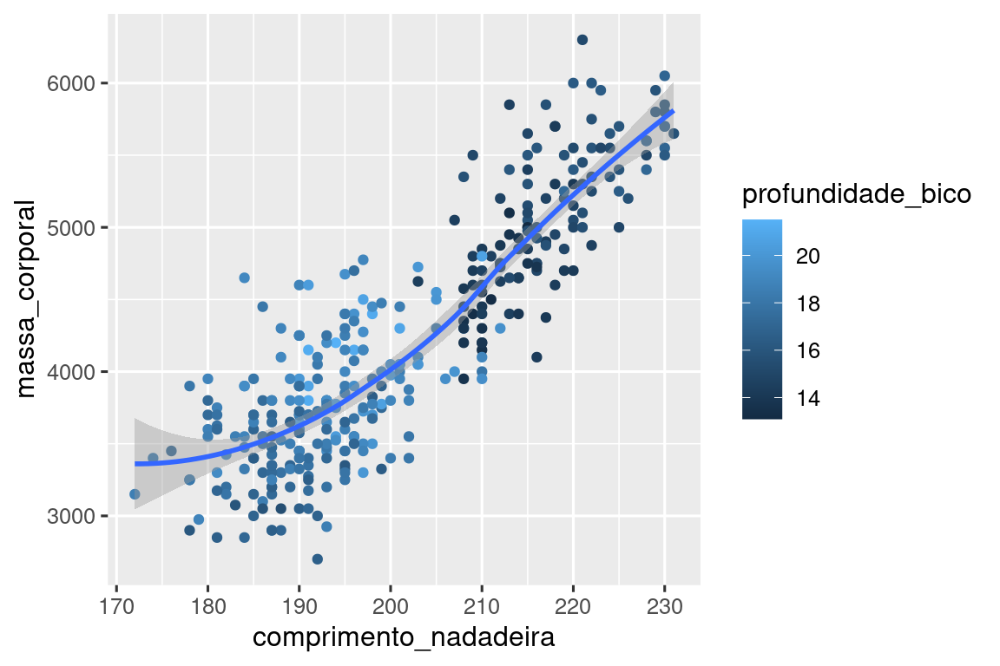
- Execute esse código em sua mente e preveja como será o resultado. Em seguida, execute o código no R e verifique suas previsões.
ggplot(
data = pinguins,
mapping = aes(x = comprimento_nadadeira, y = massa_corporal, color = ilha)
) +
geom_point() +
geom_smooth(se = FALSE)- Esses dois gráficos serão diferentes? Por que sim ou por que não?
ggplot(
data = pinguins,
mapping = aes(x = comprimento_nadadeira, y = massa_corporal)
) +
geom_point() +
geom_smooth()
ggplot() +
geom_point(
data = pinguins,
mapping = aes(x = comprimento_nadadeira, y = massa_corporal)
) +
geom_smooth(
data = pinguins,
mapping = aes(x = comprimento_nadadeira, y = massa_corporal)
)2.3 Chamadas ggplot2
À medida que passarmos dessas seções introdutórias, faremos a transição para uma expressão mais concisa do código do ggplot2. Até agora, temos sido muito explícitos, o que é útil quando se está aprendendo:
ggplot(
data = pinguins,
mapping = aes(x = comprimento_nadadeira, y = massa_corporal)
) +
geom_point()Normalmente, o primeiro ou os dois primeiros argumentos de uma função são tão importantes que você logo saberá usar eles de cor. Os dois primeiros argumentos de ggplot() são data e mapping; no restante do livro, não escreveremos esses nomes. Isso economiza digitação e, ao reduzir a quantidade de texto extra, facilita a visualização das diferenças entre os gráficos. Essa é uma preocupação de programação realmente importante, à qual voltaremos em ?sec-functions.
Reescrevendo o gráfico anterior de forma mais concisa, temos:
ggplot(pinguins, aes(x = comprimento_nadadeira, y = massa_corporal)) +
geom_point()No futuro, você também aprenderá sobre o pipe (encadeamento), |>, que permitirá que você crie esse gráfico com a seguinte sintaxe:
pinguins |>
ggplot(aes(x = comprimento_nadadeira, y = massa_corporal)) +
geom_point()2.4 Visualizando distribuições
A forma como você visualiza a distribuição de uma variável depende do tipo de variável: categórica ou numérica.
2.4.1 Uma variável categórica
Uma variável é categórica se puder assumir apenas um valor de um pequeno conjunto de valores. Para examinar a distribuição de uma variável categórica, você pode usar um gráfico de barras. A altura das barras exibe quantas observações ocorreram com cada valor x.
Em gráficos de barras de variáveis categóricas com níveis não ordenados, como a especie de pinguim acima, geralmente é preferível reordenar as barras com base em suas frequências. Para isso, é necessário transformar a variável em um fator (como o R lida com dados categóricos) e, em seguida, reordenar os níveis desse fator.
ggplot(pinguins, aes(x = fct_infreq(especie))) +
geom_bar()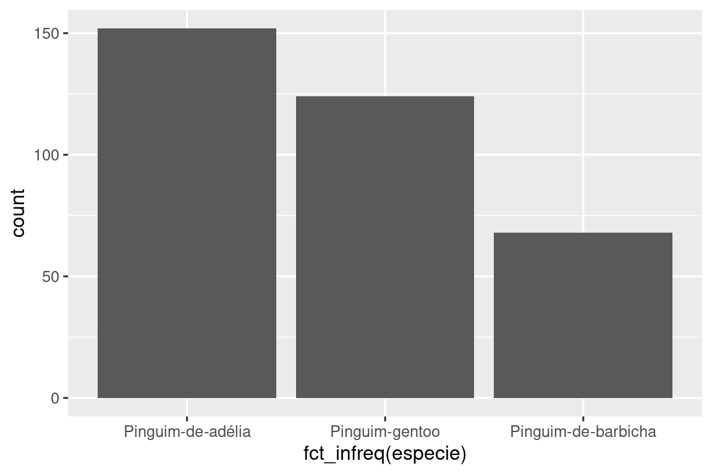
Você aprenderá mais sobre fatores e funções para lidar com fatores (como fct_infreq() mostrado acima) em ?sec-factors.
2.4.2 Uma variável numérica
Uma variável é numérica (ou quantitativa) se puder assumir uma ampla gama de valores numéricos e se for possível adicionar, subtrair ou calcular médias com esses valores. As variáveis numéricas podem ser contínuas ou discretas.
Uma visualização comumente usada para distribuições de variáveis contínuas é um histograma.
ggplot(pinguins, aes(x = massa_corporal)) +
geom_histogram(binwidth = 200)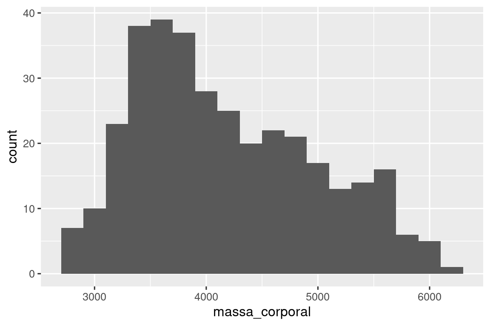
Um histograma divide o eixo x em intervalos igualmente espaçados e, em seguida, usa a altura de uma barra para exibir o número de observações que se enquadram em cada intervalo. No gráfico acima, a barra mais alta mostra que 39 observações têm um valor massa_corporal entre 3500 e 3700 gramas, que são as bordas esquerda e direita da barra.
Você pode definir a largura dos intervalos em um histograma com o argumento binwidth (largura do intervalo), que é medido nas unidades da variável x. Você deve sempre explorar uma variedade de larguras de intervalos ao trabalhar com histogramas, pois diferentes larguras de intervalos podem revelar padrões diferentes. Nos gráficos abaixo, uma largura de intervalo de 20 é muito estreita, resultando em muitas barras, o que dificulta a determinação da forma da distribuição. Da mesma forma, uma largura de intervalo de 2000 é muito alta, resultando em todos os dados sendo agrupados em apenas três barras, o que também dificulta a determinação da forma da distribuição. Uma largura de intervalo de 200 proporciona um balanço mais adequado.
ggplot(pinguins, aes(x = massa_corporal)) +
geom_histogram(binwidth = 20)
ggplot(pinguins, aes(x = massa_corporal)) +
geom_histogram(binwidth = 2000)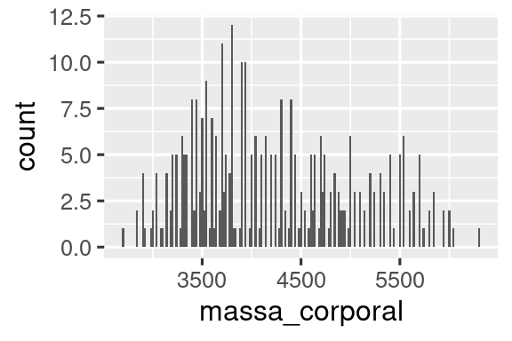
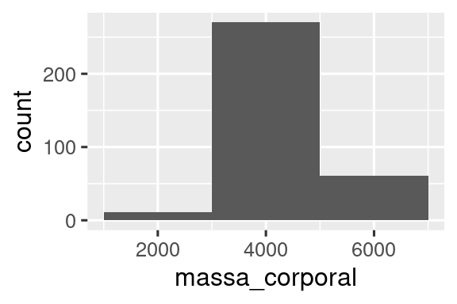
Uma visualização alternativa para distribuições de variáveis numéricas é um gráfico de densidade. Um gráfico de densidade é uma versão suavizada de um histograma e uma alternativa prática, especialmente para dados contínuos provenientes de uma distribuição suavizada subjacente. Não entraremos em detalhes sobre como geom_density() estima a densidade (você pode ler mais sobre isso na documentação da função), mas vamos explicar como a curva de densidade é desenhada com uma analogia. Imagine um histograma feito de blocos de madeira. Em seguida, imagine que você jogue um fio de espaguete cozido sobre ele. A forma que o espaguete assumirá sobre os blocos pode ser considerada como a forma da curva de densidade. Ela mostra menos detalhes do que um histograma, mas pode facilitar a obtenção rápida da forma da distribuição, principalmente com relação à moda (valor que ocorre com maior frequência) e à assimetria.
ggplot(pinguins, aes(x = massa_corporal)) +
geom_density()
#> Warning: Removed 2 rows containing non-finite values (`stat_density()`).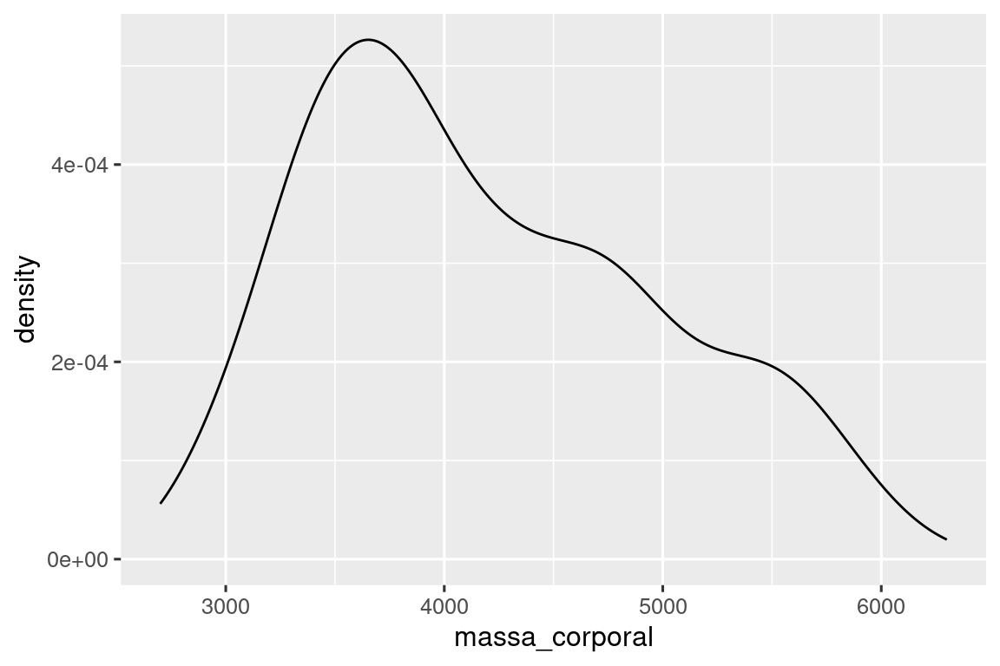
2.4.3 Exercícios
Faça um gráfico de barras de
especiedepinguins, no qual você atribuiespecieao atributo estéticoy. Como esse gráfico é diferente?Como os dois gráficos a seguir são diferentes? Qual atributo estético,
coloroufill, é mais útil para alterar a cor das barras?
O que o argumento
binsemgeom_histogram()faz?Faça um histograma da variável
quilateno conjunto de dadosdiamanteque está disponível quando você carrega o pacote dados. Faça experiências com diferentes larguras de intervalo (binwidth). Qual largura de intervalo revela os padrões mais interessantes?
2.5 Visualizando relações
Para visualizar uma relação, precisamos ter pelo menos duas variáveis mapeadas para os atributos estéticos de um gráfico. Nas seções a seguir, você aprenderá sobre os gráficos comumente usados para visualizar relações entre duas ou mais variáveis e as geometrias usados para criá-los.
2.5.1 Uma variável numérica e uma variável categórica
Para visualizar a relação entre uma variável numérica e uma variável categórica, podemos usar diagramas de caixa (chamados boxplots) lado a lado. Um boxplot é um tipo de abreviação visual para medidas de posição (percentis) que descrevem uma distribuição. Também é útil para identificar possíveis outliers. Conforme mostrado em Figura 2.1, cada boxplot consiste em:
Uma caixa que indica o intervalo da metade intermediária dos dados, uma distância conhecida como intervalo interquartil (IIQ), que se estende do 25º percentil da distribuição até o 75º percentil. No meio da caixa há uma linha que exibe a mediana, ou seja, o 50º percentil, da distribuição. Essas três linhas lhe dão uma noção da dispersão da distribuição e se a distribuição é ou não simétrica em relação à mediana ou inclinada para um lado.
Pontos que apresentam observações com valores maiores que 1,5 vezes o IIQ de qualquer borda da caixa. Esses pontos discrepantes são incomuns e, por isso, são plotados individualmente.
Uma linha que se estende de cada extremidade da caixa e vai até o ponto mais distante (sem considerar os valores discrepantes - outliers) na distribuição.

Vamos dar uma olhada na distribuição da massa corporal por espécie usando geom_boxplot():
ggplot(pinguins, aes(x = especie, y = massa_corporal)) +
geom_boxplot()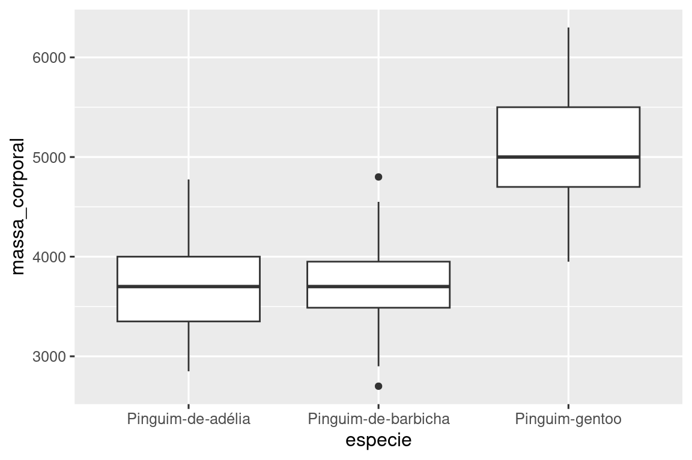
Como alternativa, podemos criar gráficos de densidade com geom_density().
ggplot(pinguins, aes(x = massa_corporal, color = especie)) +
geom_density(linewidth = 0.75)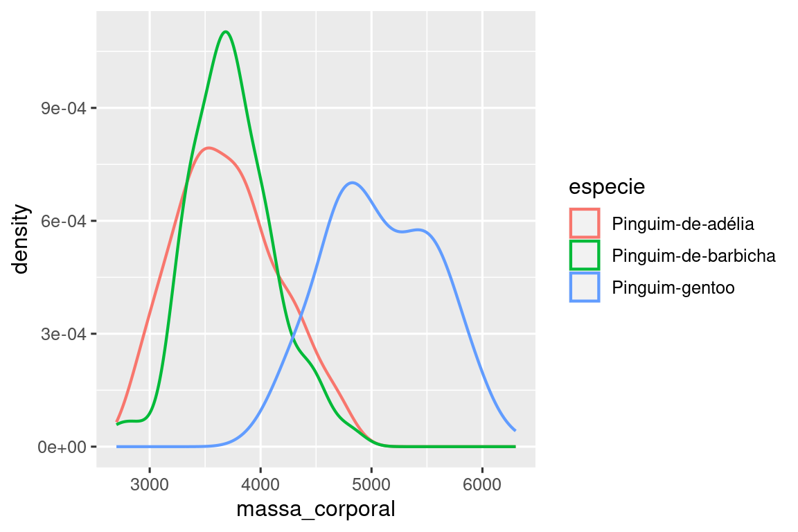
Também personalizamos a espessura das linhas usando o argumento linewidth para que elas se destaquem um pouco mais contra o plano de fundo.
Além disso, podemos mapear especie para os atributos estéticos color e fill e usar o atributo alpha para adicionar transparência às curvas de densidade preenchidas. Esse atributo assume valores entre 0 (completamente transparente) e 1 (completamente opaco). No gráfico a seguir, ela está definida como 0.5.
ggplot(pinguins, aes(x = massa_corporal, color = especie, fill = especie)) +
geom_density(alpha = 0.5)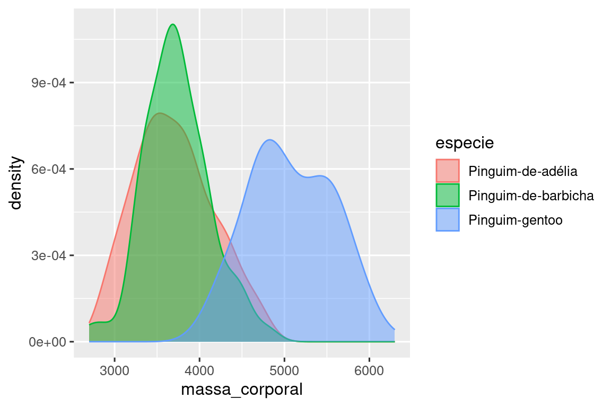
Observe a terminologia que usamos aqui:
- Nós mapeamos variáveis para atributos estéticos se quisermos que o atributo visual representado por esse atributo varie de acordo com os valores dessa variável.
- Caso contrário, nós definimos o valor de um atributo estético.
2.5.2 Duas variáveis categóricas
Podemos usar gráficos de barras empilhadas para visualizar a relação entre duas variáveis categóricas. Por exemplo, os dois gráficos de barras empilhadas a seguir exibem a relação entre ilha e espécie ou, especificamente, a visualização da distribuição de espécie em cada ilha.
O primeiro gráfico mostra as frequências de cada espécie de pinguim em cada ilha. O gráfico de frequências mostra que há um número igual de Pinguim-de-adélia em cada ilha. Mas não temos uma boa noção do equilíbrio percentual em cada ilha.
O segundo gráfico é um gráfico de frequência relativa, criado pela definição de position = "fill" na geometria, que é mais útil para comparar as distribuições de espécies entre as ilhas, pois não é afetado pelo número desigual de pinguins entre as ilhas. Usando esse gráfico, podemos ver que todos os Pinguim-gentoo vivem na ilha Biscoe e constituem aproximadamente 75% dos pinguins dessa ilha, todos os Pinguim-de-barbicha vivem na ilha Dream e constituem aproximadamente 50% dos pinguins dessa ilha, e os Pinguim-de-adélia vivem nas três ilhas e constituem todos os pinguins da ilha Torgersen.

Ao criar esses gráficos de barras, mapeamos a variável que será separada em barras para o atributo estético x e a variável que mudará as cores dentro das barras para a estética fill.
2.5.3 Duas variáveis numéricas
Até agora, você aprendeu sobre gráficos de dispersão (criados com geom_point()) e curvas suaves (criadas com geom_smooth()) para visualizar a relação entre duas variáveis numéricas. Um gráfico de dispersão é provavelmente o gráfico mais usado para visualizar a relação entre duas variáveis numéricas.
ggplot(pinguins, aes(x = comprimento_nadadeira, y = massa_corporal)) +
geom_point()
2.5.4 Três ou mais variáveis
Como vimos em Seção 2.2.4, podemos incorporar mais variáveis em um gráfico mapeando-as para atributos estéticos adicionais. Por exemplo, no gráfico de dispersão a seguir, as cores dos pontos (color) representam espécies e as formas dos pontos (shape) representam ilhas.
ggplot(pinguins, aes(x = comprimento_nadadeira, y = massa_corporal)) +
geom_point(aes(color = especie, shape = ilha))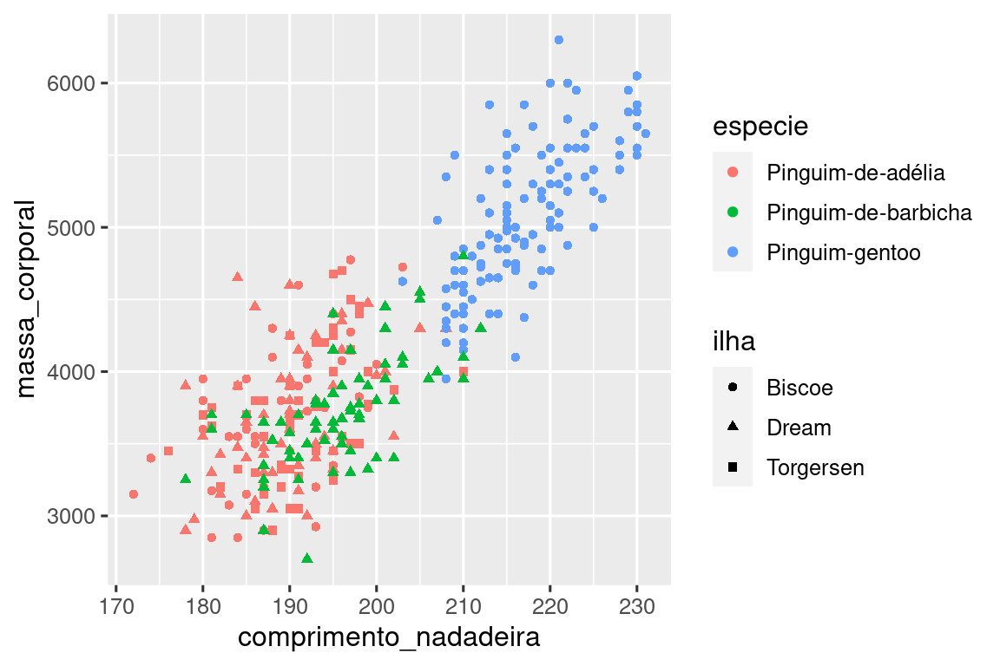
No entanto, mapear muitos atributos estéticos a um gráfico faz com que ele fique desordenado e difícil de entender. Outra maneira, que é particularmente útil para variáveis categóricas, é dividir seu gráfico em facetas (facets), subdivisões ou janelas que exibem um subconjunto dos dados cada uma.
Para separar seu gráfico em facetas por uma única variável, use facet_wrap(). O primeiro argumento de facet_wrap() é uma fórmula3, que você cria com ~ seguido do nome de uma variável. A variável que você passa para facet_wrap() deve ser categórica.
ggplot(pinguins, aes(x = comprimento_nadadeira, y = massa_corporal)) +
geom_point(aes(color = especie, shape = especie)) +
facet_wrap(~ilha)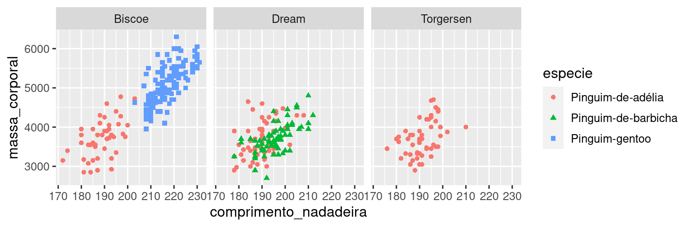
Você vai aprender sobre muitas outras geometrias para visualizar distribuições de variáveis e relações entre elas em ?sec-layers.
2.5.5 Exercícios
O data frame
milhasque acompanha o pacote dados contém observações 234 coletadas pela Agência de Proteção Ambiental dos EUA em modelos de 38 carros. Quais variáveis emmilhassão categóricas? Quais variáveis são numéricas? (Dica: digite?milhaspara ler a documentação do conjunto de dados.) Como você pode ver essas informações ao executarmilhas?Faça um gráfico de dispersão de
rodovia(Milhas rodoviárias por galão) em função decilindradausando o data framemilhas. Em seguida, mapeie uma terceira variável numérica paracolor(cor), depoissize(tamanho), depois igualmente paracoloresizee, por fim,shape(forma). Como esses atributos estéticos se comportam de forma diferente para variáveis categóricas e numéricas?No gráfico de dispersão de
rodoviavs.cilindrada, o que acontece se você mapear uma terceira variável paralinewidth(espessura da linha)?O que acontece se você mapear a mesma variável para várias atributos estéticos?
Faça um gráfico de dispersão de
profundidade_bicovs.comprimento_bicoe pinte os pontos porespecie. O que a adição da coloração por especie revela sobre a relação entre essas duas variáveis? E quanto à separação em facetas porespecie?Por que o seguinte código produz duas legendas separadas? Como você corrigiria isso para combinar as duas legendas?
ggplot(
data = pinguins,
mapping = aes(
x = comprimento_bico, y = profundidade_bico,
color = especie, shape = especie
)
) +
geom_point() +
labs(color = "especie")- Crie os dois gráficos de barras empilhadas a seguir. Que pergunta você pode responder com o primeiro? Que pergunta você pode responder com o segundo?
2.6 Salvando seus gráficos
Depois de criar um gráfico, talvez você queira tirá-lo do R salvando-o como uma imagem que possa ser usada em outro lugar. Esse é o objetivo da função ggsave(), que salvará no computador o gráfico criado mais recentemente:
ggplot(pinguins, aes(x = comprimento_nadadeira, y = massa_corporal)) +
geom_point()
ggsave(filename = "penguin-plot.png")Isso salvará o gráfico no seu diretório de trabalho, um conceito sobre o qual você aprenderá mais em ?sec-workflow-scripts-projects.
Se você não especificar a largura width e a altura height, elas serão tiradas das dimensões do dispositivo de plotagem atual. Para obter um código reprodutível, você deverá especificá-los. Você pode obter mais informações sobre a função ggsave() na documentação.
De modo geral, entretanto, recomendamos que você monte seus relatórios finais usando o Quarto, um sistema de escrita reprodutível que permite intercalar seu código e sua escrita e incluir automaticamente seus gráficos em seus relatórios. Você aprenderá mais sobre o Quarto em ?sec-quarto.
2.6.1 Exercícios
- Execute as seguintes linhas de código. Qual dos dois gráficos é salvo como
grafico-milhas.png? Por quê?
- O que você precisa alterar no código acima para salvar o gráfico como PDF em vez de PNG? Como você poderia descobrir quais tipos de arquivos de imagem funcionariam em
ggsave()?
2.7 Problemas comuns
Ao começar a executar o código em R, é provável que você encontre problemas. Não se preocupe, isso acontece com todo mundo. Todos nós estamos escrevendo código em R há anos, mas todos os dias ainda escrevemos códigos que não funciona na primeira tentativa!
Comece comparando cuidadosamente o código que está executando com o código do livro. O R é extremamente exigente, e um caractere mal colocado pode fazer toda a diferença. Certifique-se de que cada ( seja combinado com um ) e que cada " seja combinado com outra ". Às vezes, você executará o código e nada acontecerá. Verifique o lado esquerdo do console: se houver um +, isso significa que o R acha que você não digitou uma expressão completa e está esperando que você a termine. Nesse caso, geralmente é fácil começar do zero novamente pressionando Esc para interromper o processamento do comando atual.
Um problema comum ao criar gráficos ggplot2 é colocar o + no lugar errado: ele deve vir no final da linha, não no início. Em outras palavras, certifique-se de não ter escrito acidentalmente um código como este:
ggplot(data = milhas)
+ geom_point(mapping = aes(x = cilindrada, y = rodovia))Se você ainda estiver com dificuldades, tente a ajuda (painel Help). Você pode obter ajuda sobre qualquer função do R executando ?nome_da_função no console ou selecionando o nome da função e pressionando F1 no RStudio. Não se preocupe se a ajuda não parecer muito útil - em vez disso, pule para os exemplos e procure um código que corresponda ao que você está tentando fazer.
Se isso não ajudar, leia atentamente a mensagem de erro. Às vezes, a resposta estará escondida lá! Mas quando você é iniciante no R, mesmo que a resposta esteja na mensagem de erro, talvez você ainda não saiba como entendê-la. Outra ferramenta excelente é o Google: tente pesquisar a mensagem de erro no Google, pois é provável que outra pessoa tenha tido o mesmo problema e tenha obtido ajuda on-line.
2.8 Resumo
Neste capítulo, você aprendeu os fundamentos da visualização de dados com o ggplot2. Começamos com a ideia básica que sustenta o ggplot2: uma visualização é um mapeamento de variáveis em seus dados para atributos estéticos como posição (position), cor (color), tamanho (size) e forma (shape). Em seguida, você aprendeu a aumentar a complexidade e melhorar a apresentação de seus gráficos camada por camada. Você também aprendeu sobre gráficos comumente usados para visualizar a distribuição de uma única variável, bem como para visualizar relações entre duas ou mais variáveis ao utilizar mapeamentos de atributos estéticos adicionais e/ou dividindo seu gráfico em pequenos gráficos usando facetas.
Usaremos as visualizações repetidamente ao longo deste livro, introduzindo novas técnicas à medida que precisarmos delas, além de nos aprofundarmos na criação de visualizações com o ggplot2 em ?sec-layers por meio da ?sec-communication.
Com as noções básicas de visualização em seu currículo, no próximo capítulo mudaremos um pouco a direção e daremos algumas orientações práticas sobre o fluxo de trabalho. Intercalamos conselhos sobre fluxo de trabalho com ferramentas de ciência de dados ao longo desta parte do livro, pois isso te ajudará a manter a organização à medida que você escreve quantidades cada vez maiores de código em R.
Você pode eliminar essa mensagem e forçar com que a resolução de conflitos aconteça sob demanda utilizando o pacote conflicted, que se torna mais importante à medida que carrega mais pacotes. Você pode ler mais sobre o pacote conflicted no endereço https://conflicted.r-lib.org.↩︎
Horst AM, Hill AP, Gorman KB (2020). palmerpinguins: Palmer Archipelago (Antarctica) penguin data. R package version 0.1.0. https://allisonhorst.github.io/palmerpinguins/. doi: 10.5281/zenodo.3960218.↩︎
Aqui “fórmula” é o nome da coisa criada por
~, não um sinônimo de “equação”.↩︎